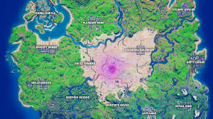

Sziasztok!
Már több mint 2 éve foglalkozok a competitive fortnite-tal és ezzel kapcsolatban hoztam el nektek pár alapvető tudnivalót és haladó tippet.
Minden héten több tournamenten lehet résztvenni, és ezeknek különböző pénznyereményeik vannak.
A formatok a tournamenteken belűli pontozásokat tartalmazza.

Az ebben a seasonban lévő mapon nagyon sokat számít, hogy hová ugrunk, mivel nagyon fontos lett az újonan bekerült arany nagyon sokat változatott a játékon. Az arany lehetővé teszi, hogy fegyvereket fejlesszünk fel.
A legerősebb kezdőhelyek: Sweaty Sands, Dirty Docs